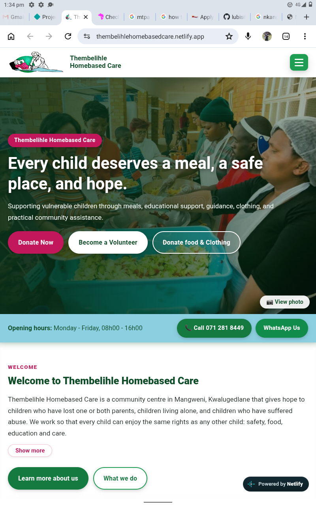
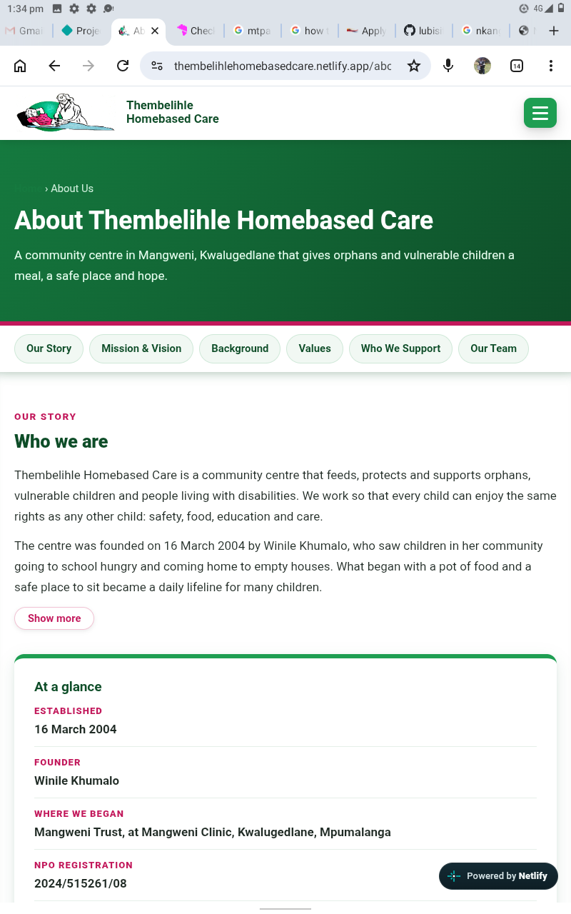

Website Development
Professional websites that help businesses build their online presence.
Learn More →VUKASAKHE TECH SOLUTIONS PTY (LTD)
Professional technology services for individuals, small businesses and organisations.
VUKASAKHE TECH SOLUTIONS PTY (LTD)
Reliable, professional technology products and services for individuals, local small businesses and organisations across the Nkomazi region.
Professional websites that help businesses build their online presence.
Learn More →Camera installation and related network cabling services.
Learn More →Practical IT setup, installation and troubleshooting support.
Learn More →Technology systems and digital solutions for business needs.
Learn More →FROM IDEA TO ESTABLISHMENT
Starting a business takes planning, research and commitment. Use these practical steps to prepare before you begin trading.
Important: B-BBEE is separate from CIPC company registration. Depending on your business and turnover, you may need a valid B-BBEE affidavit or certificate through the appropriate process.
TAKE YOUR BUSINESS FURTHER
Your business may be operating, but customers might still struggle to find your location or discover your products and services. Social media alone may not always reach the people actively searching for what you offer.
A LOOK AT OUR PROJECTS
Explore selected screenshots from websites previously designed.

Screenshots of website previously designed.

Screenshots of website previously designed.
We provide professional website development, CCTV camera installation, IT support and technology solutions for businesses, schools and individuals across the Nkomazi region.
About Us